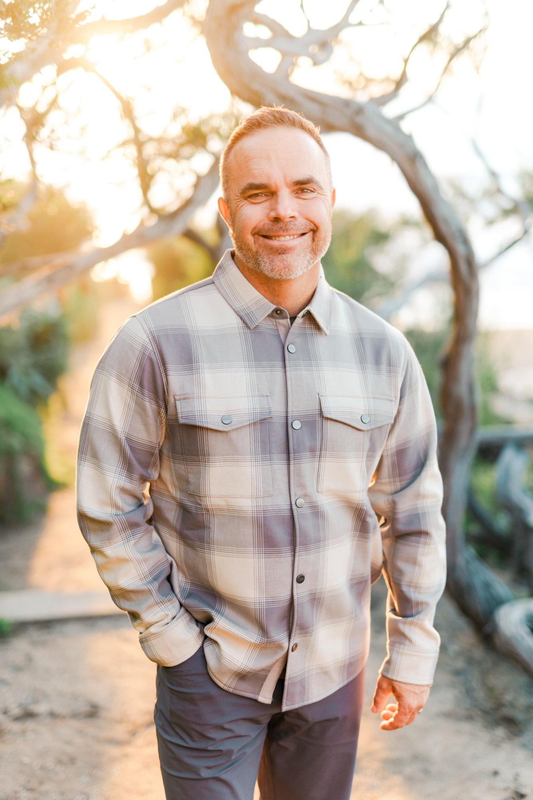

This is not a coaching system built on theory. It was forged inside a broken marriage, a business on the edge, a hospital room at 2am — and forty years of learning the hard way what it actually means to be a man.
I grew up in Las Vegas. When I was seven years old, my little sister Emily — not quite two — drowned in our swimming pool. I was there. I saw it all. It changed the course of my entire family.
We experienced a horrible tragedy — and then we never did anything to acknowledge how hard that was. Not one of us. We carried it the way families carry things they don't know how to hold: silently, separately, and for decades.
I didn't understand what that day had planted inside me until I was a grown man. But it was running everything. How I loved people. How I let people love me. How I stayed close and how I kept my distance. A seven-year-old boy by a pool in Las Vegas was quietly making decisions for a forty-year-old man — and neither of them knew it.
"Not until I did the deep work did I recognize how profoundly that day had shaped me. The codes it planted ran my fears, my distances, my inability to be truly present with the people I loved most."
In my teenage years I got into alcohol and drugs. I had been a promising baseball player with my future set on success after high school. I let those things blind my path. I was living a destructive life — lying to everyone I loved, hiding who I had become, watching my future disappear and not knowing how to stop it.
When I was 20 my mother gave me an ultimatum: stop, or leave. I remember the pain of that moment — the realization that I had no real friends, no real future, no real idea of who I was anymore. I made a decision. I stopped everything. I came clean to every person I loved about every lie I had told. I let my past become open so I didn't have to hide anymore.
I began to pray. To read scripture. To genuinely test — not perform — the idea that God was real and that Christ was who people said He was. And I found out. I had a life-changing experience with God. He was real. He was there. Something in me changed permanently that night — and I could never doubt it again.
"That foundation — the one I found at 20 — has been under everything that followed. Even the years I forgot it was there. Even the years I was too busy and too loud inside to stand on it."
I served a two-year mission in New York City. I learned Cantonese Chinese and spent two years teaching Chinese people about Jesus Christ. I watched lives change. I came home different — still unsure of exactly who I was in the world, but certain of the most important thing.
I reunited with my high school girlfriend Lisa. We fell back in love. I followed unlikely doors — including one that led me to pool construction, following a mentor's advice even when the path looked hard. In 2002 I went all in. In 2005 I started Pacific Coast Pools. I had dreams of building something great.
In the beginning, it was not great. It was hard.
I didn't grow up with money. I grew up with the belief — the deep, unspoken kind — that money was for other people. People more qualified than me to have it. That belief followed me into my marriage, into fatherhood, into every business decision I made.
I built pools with my own hands. I tried to market myself. I tried to sell. I tried to lead. And from 2005 to 2018, while the business was growing, anxiety was quietly destroying everything else. My relationship with Lisa was suffering. My kids knew I loved them — but I was missing their lives. I didn't know how to connect with them. I acted out of guilt instead of presence, trying to make up for not being there in ways that left both them and me feeling empty — because I wasn't building a relationship. I was managing a debt I felt I owed.
When I wasn't working I was playing video games to disappear. I overate. I worried constantly about jobs and money and customers. I was physically present with my family and completely gone at the same time.
"I felt powerless all the time. Not just financially — though that was real — but powerless in my own life. Like things were happening to me and I had no real say. So I reached for whatever I could control. And none of it was the right thing."
In 2009 we lost our house. I drove all over Southern California doing whatever work I could find. I was scraping. I was grinding. I was begging God for help and genuinely unsure He was hearing me. I always found a way to provide — even at the lowest moments. I credit every bit of that to Him. But I couldn't feel His presence. I was too loud inside to hear anything quiet.
Coming into 2010 I made a quiet internal decision. I had been focused on finding whatever life was offering me just to survive. But I knew — somewhere underneath all the fear — that I was not the type of man who settled for crumbs. I didn't fully know what that meant. I just knew it was true.
I started reading. Personal development. Mindset. How the mind works and how to change it. I cut out pictures of the future I wanted and put them on my desk. I glued my business logo to a picture of a large commercial building. I wrote a check to myself for $500,000 and believed — somehow — that I would cash it.
At the end of 2010, at my absolute lowest — considering leaving California and starting over in Texas — I felt a strong prompting to search for pool builder websites near me in Temecula. I found Premier Pools and Spas. I saw a link to become a licensee. I filled out the form. I had no idea what I was stepping into.
I went all in in 2011. I was coachable — and I needed that. They gave me a pathway. I implemented one step at a time.
We doubled year after year. Eventually we had a building with the Premier Pools and Spas logo on top of it. The check I had written to myself for $500,000 — I cashed it. What God had been building in me through those stripped-down years was paying compound interest.
But the business growing did not mean I was growing. The revenue was real. The success was real. And I was still the same man inside — carrying all the same weight, just with a bigger stage to carry it on.
Miraculously I met a man named Lane who was a coach working in a system called Intentional Creation. For four months I was coached through it — and I began to understand, for the first time, why I was the way I was. Why my relationships suffered. Why the anxiety never left. Why success never felt like enough.
I learned there was another way to live. One that made it possible to have it all — business success and a real relationship with my wife. Real presence with my kids. Gratitude where there had been worry. Joy in the journey instead of burden always present.
"I was able to feel joy in my journey instead of the burden and the worry being always present. Gratitude filled me up more regularly and life became more full."
But life kept growing. New success brought new challenges. The weight came back stronger. The tools I had learned felt outdated. I was stuck and lost again — but in a new way, at a new level.
I was guided to another coach named Tony. With him I went deeper than I had ever gone. He helped me see the hidden, deep-inside-the-soul kind of trauma — how my life's experiences and the way I had managed through them had left a series of codes implanted in who I was. Those codes ran my entire system. When threats came, I was hijacked by old programs I didn't even know were running.
Through Tony I worked with my Heavenly Father in a way I never had before. I was able to touch parts of my being that I had no idea were there.
"Not until I worked with Tony did I recognize how deeply that day in Las Vegas — when Emily died — had shaped me. How that experience, rooted inside a seven-year-old boy, would dictate for decades how I loved people. And how I let people love me."
I learned to love again. To let others love me. So freeing. So new. At an age when most men think the shape of who they are is fixed, I discovered it wasn't. That healing was real. That God's love could reach into places sealed off since childhood and open them back up.
By 2018 the business had grown beyond anything I had imagined. The logo was on the building. From the outside, it was the happy ending. From the inside, I was afraid to go to work. The anxiety of what the business had become — the weight of leading it, the complexity of it — had grown heavier than I knew how to carry.
I lost my brother. He became a competitor. That loss cut deeper than business. I was carrying grief and betrayal and the weight of a man who had outbuilt himself — whose life had grown bigger than his inner foundation could hold.
One night I ended up in the hospital convinced I was having a heart attack. It was an anxiety attack. That was the moment I could no longer pretend I was fine. The man who had built the business, provided for the family, performed successfully on the outside — that man was running on empty. And he had been for a long time.
"I needed to learn how to manage myself so I didn't end up divorced and on drugs. Not business coaching. Not strategy. I needed someone to help me understand why I was the way I was — and how to become the man my family was actually waiting for."
That is when BILD came into focus. Not as a business idea. As a calling. I could see clearly for the first time that everything I had lived — the crumbs years, the hospital room, the seven-year-old boy by the pool, the mission in New York, the $500,000 check, the coaches who saved me — all of it was preparation. All of it was building something in me that was meant to be given away.
Today I own two Premier Pools and Spas franchises — one in California and one in Dallas, Texas since 2022. I am more challenged than ever. I am also more grounded than I have ever been. My faith is my foundation. My relationship with God is where everything else is built from — not the afterthought I ask to bless what I have already decided.
My marriage is stronger than it has ever been. My kids know who their father actually is. I go to work because I want to — not because I am running from something. I can feel God's hand in my life now in a way I never could when I was too loud inside to hear Him.
I played video games and overate for years rather than name what I was actually feeling. The hospital room was where I finally couldn't avoid it. Naming it was the beginning of everything.
I was publicly building a business while privately falling apart. I was asking my wife and kids to receive a man I hadn't yet become. The gap between those two men was costing my family everything.
The years God came through most clearly were the years I brought Him in first. The prompting to look up that website. The doors that opened quietly. The years I forced things ended in hospital rooms.
I wrote a $500,000 check before I understood why I wanted the money. I confused achievement with meaning for most of my adult life. Purpose came later — and changed everything about how the success felt.
A seven-year-old boy by a pool in Las Vegas was running my adult relationships for decades. Losing my brother. The weight I carried without knowing it. Forgiveness was the hidden ceiling on everything else.
I envisioned my current home at 35 and forgot about it. I walked into it at 40 without realizing it had been working the whole time. When anxiety took my imagination away I stopped seeing what was possible. Getting it back changed everything — for my family, my businesses, and BILD itself.
I don't do this for money. I don't do it to be noticed. I do it because there are too many men out there just like me — men who move through this earth in a way that could leave a true mark of beauty — who are stuck, distracted, and performing a version of themselves that is costing everyone around them.
BILD is for the man who is done performing. Who is ready to pursue something real — not a bigger empire, but a deeper life. Not more achievement, but true alignment. Not the world's definition of success, but God's.
A true BILD man pursues all of these — not one at the expense of the others.

Jeff Boyer · Temecula, CATwo Premier Pools and Spas franchises — one in Southern California, one in Dallas, Texas. A marriage stronger than it has ever been. Four kids who know who their father actually is.
And a calling that came through forty years of learning — the hard way — what it means to close the gap between the man you are and the man you were made to be.
BILD is that calling.
I see the spiritual side of life so deeply now. We weren't meant to just be men who go build things the world can admire. We were meant to come to Christ and find Him. And from that place — co-create a world full of love and possibilities. Not a pursuit of money or worldly things that bring temporary highs. The kind of pursuit that brings real fruits to real people. That brings people closer to God.
I wasted good years. Years with my kids when they were small. Years with Lisa when we could have been closer. I don't say that with shame — I have set it down. I say it because I know there is a man reading this right now who is in the middle of those years and doesn't have to waste them the way I did.
I needed guides. I needed Lane. I needed Tony. I needed coaches at every important turn of my life — men who could see past my limitations and show me a pathway forward. Doing it alone is just too hard. We were not built for it. The men who try — who white-knuckle their way through — they end up in hospital rooms at 2am wondering where everything went.
"Your life is so precious. There is nothing about you that is normal. You were given this life to use it to its maximum opportunity. Don't wait for the hospital room to start believing that."
BILD exists because I found the other side of all of it. And the other side is real. The marriage can be restored. The relationship with your kids can be rebuilt. The anxiety can lift. The gap between who you are and who you were made to be can close. I know because it closed for me.
If any part of this story sounded like yours — that recognition is not an accident. That is the beginning.
That recognition is not an accident. Take the assessment, explore the six pillars, or reach out directly. The next step is just an honest conversation.